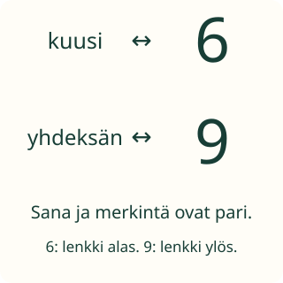

Aavan sana- ja numerolaput

Aavalla on lappu, jossa lukee kuusi. Mikä numeromerkintä kuuluu sen pariksi?
Tavoite: yhdistän lukusanan ja numeromerkinnän.
Aavalla on lappu, jossa lukee kuusi. Mikä numeromerkintä kuuluu sen pariksi?
Tavoite: yhdistän lukusanan ja numeromerkinnän.
Aikuinen sanoo kuusi. Etsi numerolappu 6. Aikuinen voi myös lukea sanalapun. Sama luku voidaan sanoa, kirjoittaa sanana ja merkitä numerolla.

6 ja 9 muistuttavat toisiaan. Tässä kuudella on suljettu lenkki alhaalla. Yhdeksällä se on ylhäällä. Sanaan kuusi kuuluu 6.
Oven lapussa on 5. Sen nimi on viisi. Oven luona 5 luetaan samalla nimellä kuin numerokortissa. Lapun koko ei vaihda luvun nimeä.
Ennusta: jos sana kuusi kirjoitetaan isommalle lapulle, vaihtuuko sen pari?
Valitse sana. Kosketa sitten sen numerolappua. Voit vaihtaa parin. Aikuinen saa lukea sanat.
Valitse sana.
Parit odottavat.
Oven lappu on 5. Mikä on sen nimi?
Valitse sana.
Katso malliparit: kaksi — 2, kuusi — 6, yhdeksän — 9. Aikuinen voi lukea yhden sanan kerrallaan. Ääneen vastaamista ei tarvita.
Tee paperille parit nolla — 0, yksi — 1, kolme — 3 ja kymmenen — 10. Vaihtakaa rooleja: toinen näyttää numeron, toinen löytää sanan.
Tämä on kanoninen prosessirooli: yhdistetään kuultu tai luettu lukusana ja numeromerkintä. Esineiden määrää ei päätellä. Vakaa lukusanajono on vahva tuki, ei pakollinen avausportti. Lukemisen voi välittää aikuinen; puhetta ei tallenneta eikä arvioida. Parin rakentaminen ei osoita numeron kirjoitustaitoa tai lukumääräkäsitettä.
Ilman laitetta: tee sana- ja numerolaput. Sano nimi ja anna lapsen liittää kortit. Harjoittele myöhemmin eri käsialoja; 6/9-vinkki koskee näytettyä kirjoitusasua.
Oppitunnin mallin ja paikallisen harjoituksen alue on 0–10. Saman KC:n Lite-siirrossa voi esiintyä esimerkiksi neljätoista ja 14 (vaihtoehtoina myös 41 ja 4). Valmistele tarvittaessa teinilukusana erikseen tai pysy oppitunnin alueessa. Onnistuminen 0–10-alueella ei todista itsenäistä 12–19-lukusanojen hallintaa; tämä ei lisää kanonista esitietovaatimusta.
Lopuksi: mikä numerolappu kuuluu sanalle kuusi?